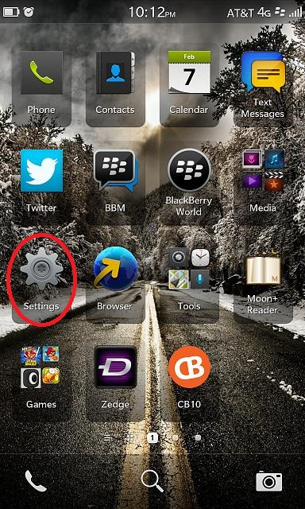
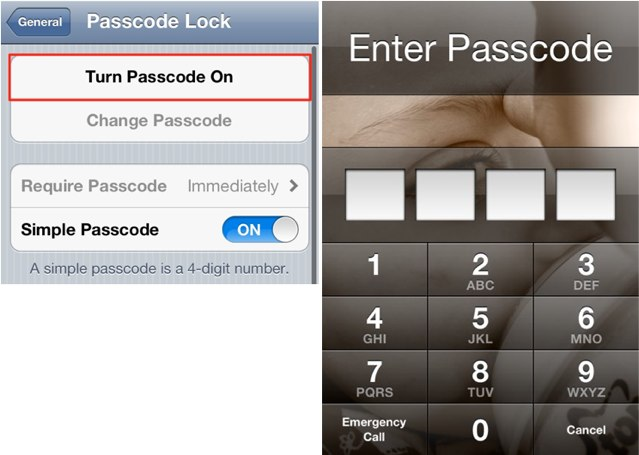
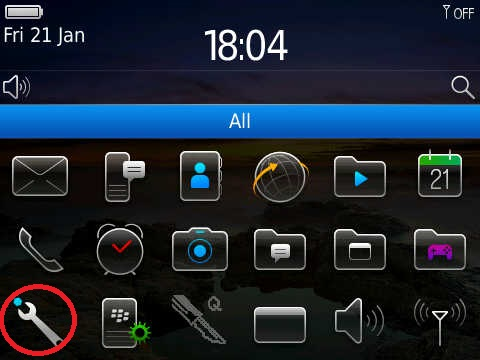
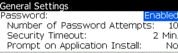
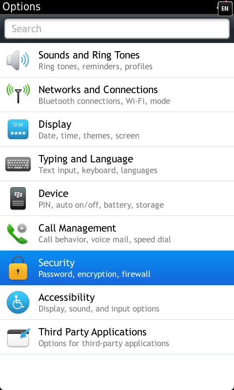
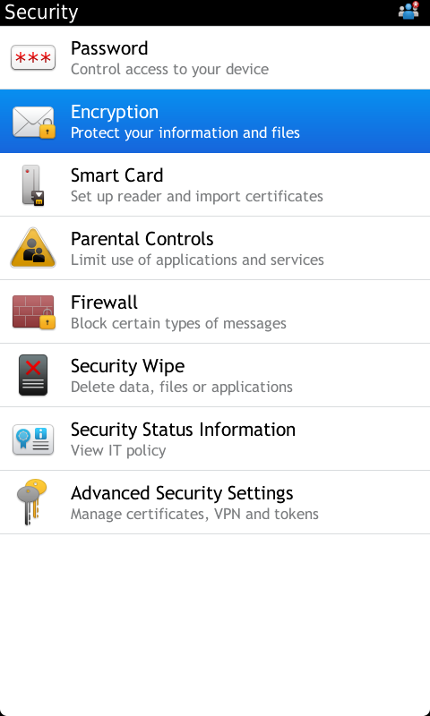
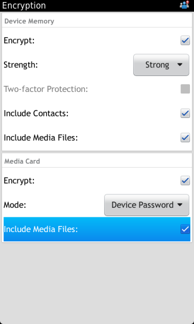

Setting up a password on your Blackberry device
Blackberry 10
1) Go to Settings from the home screen
(Screen doesn't look like this?)
2) Select Security and Password followed by Device Password
3) Set Device Password to ON
4) Set Simple Password to ON
5) Enter your desired password when prompted and then again after to confim

Older Blackberry Devices
1) Select Options (spanner icon)
2) Scroll down the menu and select Security Options

3) On the following screen, select General Settings
4) Set Password to Enabled
5) On the screen that appears, enter your desired password. If a screen does not appear, you may have already set a password for another application. That is your default password
6) Set your number of password attempts. This is the number of incorrect guesses you get before your phone clears its memory. Be cautios when choosing a number
7) Security Timeout refers to the amount of time your device is inactive for before it requires a password unlock
8) Select yes for Prompt on Application Install if you want to be prompted for your password when installing applications
Encrypting data on your Blackberry device
1) Back-up the data on your phone before attempting to encrypt it. This is a fallback in case of data loss/corruption during the encryption process. If your phone is new, it is recommended you encrypt it before using it.
2) Have your device plugged into an external power souce with the charger during encryption. The process may take up to an hour and if the battery runs out during encryption, your device may be damaged.
3) You should set up a resonable inactivity time out to lock your device when not in use.(See Setting up a password on your Blackberry device to see how this can be done). Encrption protects the data on the device when it is locked and even when it is off.
How to encrypt your phone:
To enable device encryption on a blackberry phone (only BB 10 or newer supported) navigate to Settings->Security->Encryption and switch device encryption to ON.
  content